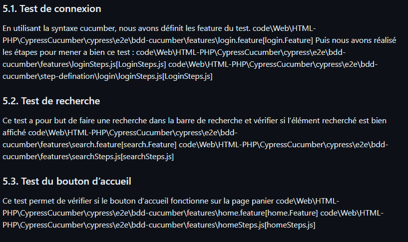
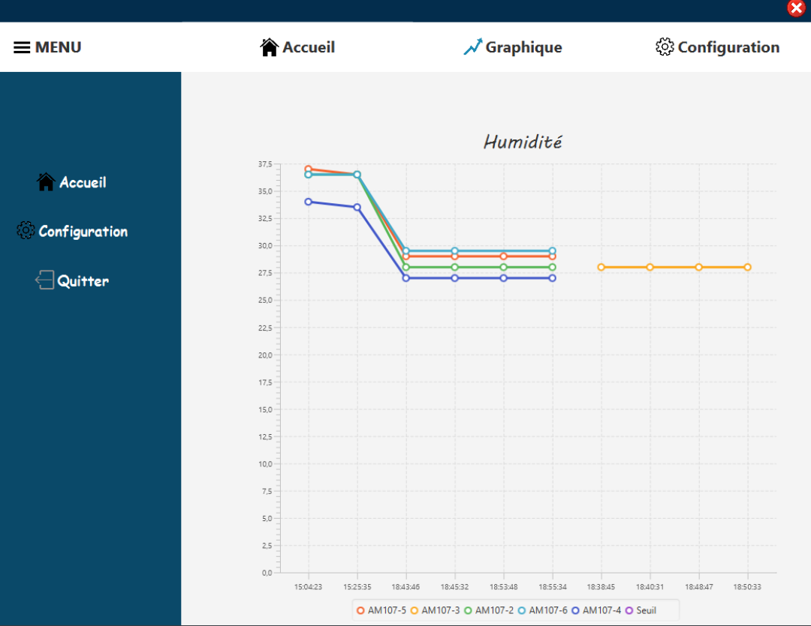
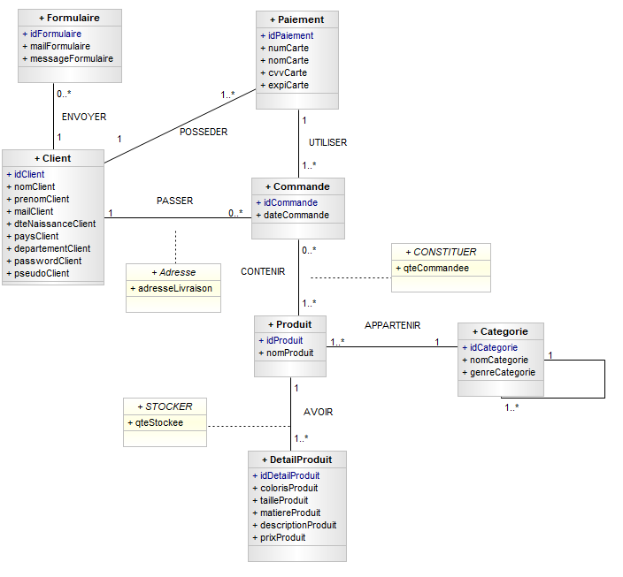
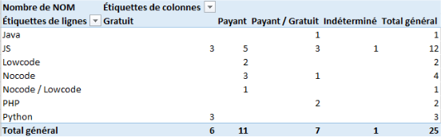
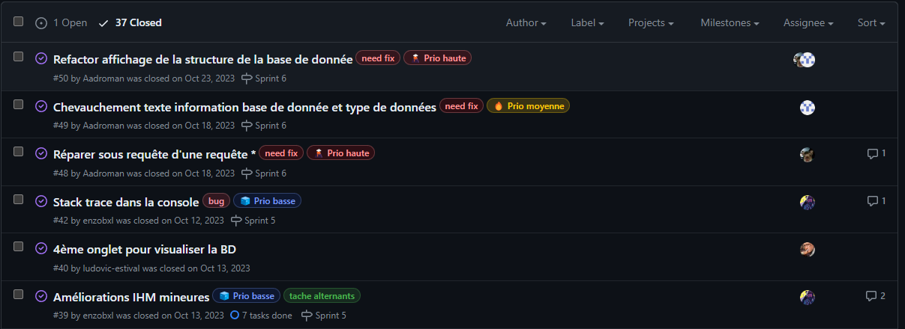

Réaliser des application
L'objectif de cette compétence était d'assimiler tous les concepts essentiels à la création d'applications informatiques. Pour démontrer cela, je vais vous présenter mon évolution tout au long de mes années à l'IUT en utilisant des projets concrets comme illustrations.
Situation d'apprentissage et d'évaluation (SAE)
Apprentissage critique :
- Choisir et implémenterles architectures adaptées
- Faire évoluer une application existante
- Intégrer des solutions dans un environnement de production
Contexte
L'objectif de cette SAE était de réaliser une interface graphique pour afficher des arbres algébriques d'une application Java existante.


Illustrations
Voici une image de l'interface graphique final :

Optimiser des application
L'objectif est d'acquérir la capacité à optimiser une application informatique tant pour des raisons de performances que pour des considérations écologiques.
Situation d'apprentissage et d'évaluation (SAE)
Apprentissage critique :
- Anticiper les résultats de divers métriques
- Profiter et justifier le comportement d'un code existant
- Choisir et utiliser des bibliothèques et méthodes dédiées au domaine d'application
Contexte
L'objectif était de le projet réaliser par un autre groupe et d'implémenter des tests sur des cas d'utilisation.


Illustrations
Voici une image des tests mis en oeuvre :
Administrer des systèmes
Dans cette compétence, l'objectif était d'acquérir les compétences nécessaires pour utiliser les commandes bash, interagir avec des machines virtuelles, les configurer et les déployer, ainsi que pour sécuriser les fichiers en utilisant les droits et les utilisateurs adéquats.
Situation d'apprentissage et d'évaluation (SAE)
Apprentissage critique :
- Concevoir et développer des applications communicantes
- Utiliser des serveurs et des services réseaux virtualisés
- Sécuriser les services et données d'un système
Contexte
L'objectif de cette SAE était de réaliser une application java permettant de paramétrer des capteurs.

Illustrations
Voici une image de l'application final :
Gérer des données
Dans cette compétence, l'objectif était d'acquérir des compétences en gestion et organisation des données, ainsi que dans la mise en place de bases de données.
Situation d'apprentissage et d'évaluation (SAE)
Apprentissage critique :
- Optimiser les modèles de données de l'entrprise
- Assurer la sécurité des données
- Organiser la restitution de données à travers la programmation et la visualation
- Manipuler des données hétérogènes
Contexte
L'objectif de cette SAE était de réaliser un site web d'e-commerce.


Illustrations
Voici le diagramme de classe de la base de données du site :
Conduire un projet
Dans cette compétence, l'objectif était d'acquérir les compétences nécessaires pour organiser un projet sur le plan temporel et organisationnel.
Stage seconde années
Apprentissage critique :
- Identifier les process présents dans une organisation en vue d'améliorer les systèmes d'information
- Formaliser les besoins du client et de l'utilisateur
- Définir et mettre en oeuvre une démarche de suivi de projet
Contexte
L'objectif de ce stage était de chercher tester et mettre en place un environnemnt de développement pour une application web.


Illustrations
Voici une image de l'interface graphique final :
Travailler en équipe
Dans cette compétence, l'objectif était d'acquérir les compétences pour travailler efficacement au sein d'une équipe, en comprenant son rôle et ses responsabilités, et finalement apprendre à diriger une équipe.
Situation d'apprentissage et d'évaluation (SAE)
Apprentissage critique :
- Choisir et implémenterles architectures adaptées
- Faire évoluer une application existante
- Intégrer des solutions dans un environnement de production
Contexte
L'objectif de cette SAE était de réaliser une interface graphique pour afficher des arbres algébriques d'une application Java existante.


Illustrations
Voici une image de des différentes étapes à réaliser :
